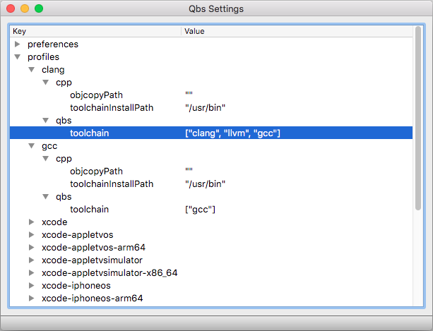

qbs config-ui [--settings-dir <directory>] [--system]
Opens the Qbs Settings application for managing Qbs settings, such as preferences and profiles, in a hierarchical view. This makes it easier to manage a large number of settings than using the config command from the command line.

For more information, see Configuring Profiles and Preferences.
--settings-dir <directory>Reads all settings (such as profile information) from the specified <directory>. If the directory does not exist, it will be created.
The default value is system-specific. For example:
$HOME/.config/QtProject/qbs%APPDATA%\QtProject\qbs$HOME/Library/Preferences/qbs--systemInstructs the tool to work on the system-level settings. Otherwise, the user-level settings are presented.
--help|-h|-?Displays help for the command.
Opens Qbs Settings:
qbs config-ui